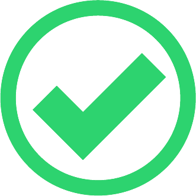

<ion-header class="ion-no-border">
  <ion-toolbar>
        
    <ion-buttons slot="start" style="position: absolute;">
      <ion-back-button defaultHref="/aprovar-pontodescarte-item"></ion-back-button>
    </ion-buttons>
  </ion-toolbar>
</ion-header>

<ion-content>
  <h3>APROVAR LIXO ELETRÔNICO</h3>
  <form #itemForm="ngForm" novalidate>
    <ion-item>
      <ion-select disabled="true" placeholder="Selecione o item" [(ngModel)]="pontodescarteitem.itemId" name="item">
        <ion-select-option *ngFor="let item of itens" [value]="item.id">
          {{item.nome}}
        </ion-select-option>
      </ion-select>
    </ion-item>

    <ion-item>
      <ion-input disabled="true" type="text" placeholder="Quantidade" name="quant" [(ngModel)]="pontodescarteitem.quant">
      </ion-input>
    </ion-item>
   
    <ion-radio-group (ionChange)="executarAlgo()" name="status" [(ngModel)]="pontodescarteitem.status">
    <ion-grid style="margin-top: 100px">
      <ion-row>
        <ion-col style="position: relative;" size="5" offset="1">
          <ion-item style="--border-style: none !important">
            
            <ion-radio slot="start" [value]=1></ion-radio>
          </ion-item>
        </ion-col>
        <ion-col style="position: relative;" size="5">
          <ion-item  style="--border-style: none !important">
            
            <ion-radio slot="start" [value]=2></ion-radio>
          </ion-item>
        </ion-col>
      </ion-row>
    </ion-grid>
  </ion-radio-group>
  </form>

  <ion-fab vertical="bottom" horizontal="end">
    <ion-fab-button color="success" (click)="salvar()" [disabled]="itemForm.invalid">
      <ion-icon name="checkmark-outline"></ion-icon>
    </ion-fab-button>
  </ion-fab>


</ion-content>